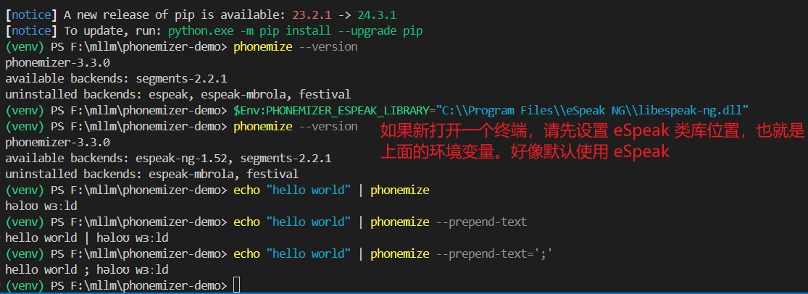
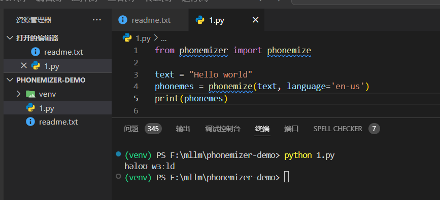

GitHub：bootphon/phonemizer: Simple text to phones converter for multiple languages
文档：Welcome to Phonemizer’s documentation! — Phonemizer documentation
上面的文档写的很详细。例如：如何在各环境（ Windows 、MacOS 、 Debian/Unbuntu 等）下安装依赖；命令行如何使用；Python 如何使用等。
这是和
# 创建虚拟环境
python -m venv venv
# 激活虚拟环境
.\venv\scripts\activate
# 退出虚拟环境
deactivate
# 安装依赖
pip install phonemizer
# 检查版本（还会告诉你 backends 哪些可用）
phonemize --version
# 首先安装 espeak-ng ，设置环境变量 PHONEMIZER_ESPEAK_LIBRARY ，之后 espeak 就可用了
$Env:PHONEMIZER_ESPEAK_LIBRARY="C:\\Program Files\\eSpeak NG\\libespeak-ng.dll"
# 测试 1
echo "hello world" | phonemize
# 测试 2
echo "hello world" | phonemize --prepend-text
# 测试 3
echo "hello world" | phonemize --prepend-text=';'

上面提到的
直接上代码：
from phonemizer import phonemize
text = "Hello world"
phonemes = phonemize(text, language='en-us')
print(phonemes)
